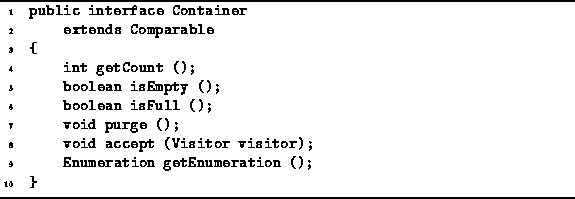

Data Structures and Algorithms
with Object-Oriented Design Patterns in Java
Data Structures and Algorithms
with Object-Oriented Design Patterns in JavaA container is an object that contains within it other objects. Many of the data structures presented in this book can be viewed as containers. For this reason, we develop a common interface that is implemented by the various data structure classes.
The Container interface is declared in Program  .
It comprises the six methods,
getCount, isEmpty, isFull,
purge, accept, and getEnumeration.
.
It comprises the six methods,
getCount, isEmpty, isFull,
purge, accept, and getEnumeration.

Program: Container interface.
A container may be empty or it may contain one or more other objects. Typically, a container has finite capacity. The isEmpty method returns true when the container is empty and the isFull method returns true when the container is full. The getCount method returns the number of objects in the container.
The purpose of the purge method is to discard all of the contents of a container. After a container is purged, the isEmpty method returns true and the getCount method returns zero.
Conspicuous by their absence from Program
are methods for putting objects into a container
and for taking them out again.
These methods have been omitted from the Container interface,
because the precise nature of these methods depends on the type
of container implemented.
In order to describe the remaining two methods,
accept and getEnumeration,
we need to introduce first the concepts of
a visitor and an enumeration ,
as well as with the Visitor and Enumeration interfaces
which represent these concepts.
Visitors are discussed below in Section
and enumerations are discussed in Section .
 Copyright © 1998 by Bruno R. Preiss, P.Eng. All rights reserved.
Copyright © 1998 by Bruno R. Preiss, P.Eng. All rights reserved.